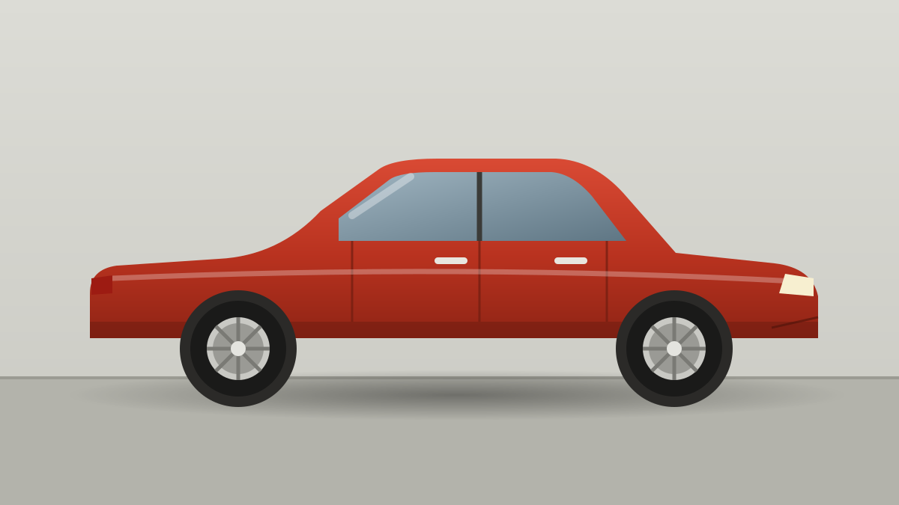
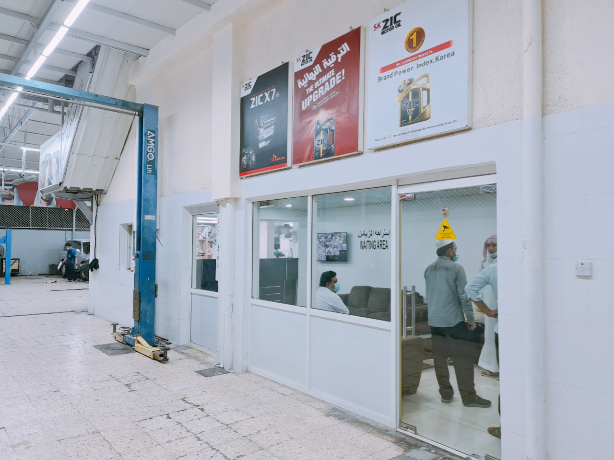

جميع الماركات والموديلات
سيارات يابانية وأوروبية وأمريكية ومواصفات خليجية، من سيارات الاستخدام اليومي إلى سيارات العمل الشاقة.
أي ماركة وأي عطل. أخبرنا بما تعانيه سيارتك، ونخبرك بما يلزم لإصلاحها بالضبط، دون لف أو دوران.
لا استثناءات. كل ما هو ميكانيكي أو كهربائي أو متعلق بالتكييف والتبريد، نتولاه.
سيارات يابانية وأوروبية وأمريكية ومواصفات خليجية، من سيارات الاستخدام اليومي إلى سيارات العمل الشاقة.
تشخيص عملي قبل استبدال أي قطعة، لا تخمين ولا تجربة عشوائية للقطع.
نشرح لك خيارات القطع والفروق بينها، وتختار أنت الدرجة التي تناسبك.
تعرف التكلفة قبل بدء العمل، ولا بنود مفاجئة عند الاستلام.
ستة أيام في الأسبوع
من السبت إلى الخميس على فترتين، حتى لا يضيع عليك أسبوعك بسبب الإصلاح.
تحت غطاء المحرك
فحص المحرك، وفحص الكمبيوتر، وإصلاح الدينامو والمارش، وتغيير الزيت والفلتر، وفحص البطارية، وصيانة الرادييتر ونظام التبريد.
نتائج الإصلاح
حرّك المقبض لتقارن بين السيارة كما وصلتنا وبعد انتهاء الإصلاح.

 قبل
بعد
قبل
بعد
الصيانة والإصلاح
كل فئة أدناه هي عمل حقيقي ننجزه كل أسبوع في المصفح. اختر ما تحتاجه سيارتك وأرسله إلينا مباشرة عبر واتساب.
لا صور جاهزة. هذه أرضية الورشة وصالة الانتظار في المصفح.


تفضّل بزيارتنا
شارع الرشاد 2، المصفح، بالقرب من Popular Auto Parts. أو أرسل لنا القائمة أولاً عبر واتساب.
إصلاح سيارات في شارع الرشاد 2، المصفح (M-8)، بالقرب من Popular Auto Parts.
نعمل من السبت إلى الخميس.
الجمعة عطلة.
لإصلاح السيارات ش.ذ.م.م · المصفح، أبوظبي

بنينا هذه الورشة لتكون من أكثر الورش ثقةً في المصفح، إصلاحاً صادقاً بعد إصلاح.
لا عمل أصغر من أن نهتم به، ولا عمل يمرّ دون شرح. إن كان الإصلاح يحتمل التأجيل قلنا لك ذلك، وإن لم يحتمل فستعرف السبب بالضبط قبل أن نبدأ.
استكشف الموقع
زورنا أو اتصل بنا
شارع الرشاد 2، M-8، المصفح، أبوظبي — بالقرب من Popular Auto Parts
 ابحث عن هذه اللافتةشارع الرشاد 2، بالقرب من Popular Auto Partsافتح في خرائط Google ←
ابحث عن هذه اللافتةشارع الرشاد 2، بالقرب من Popular Auto Partsافتح في خرائط Google ←